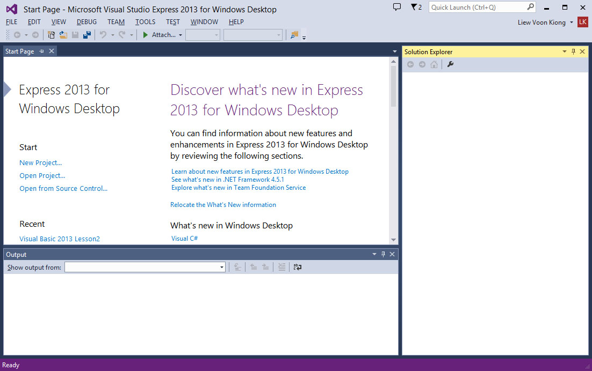
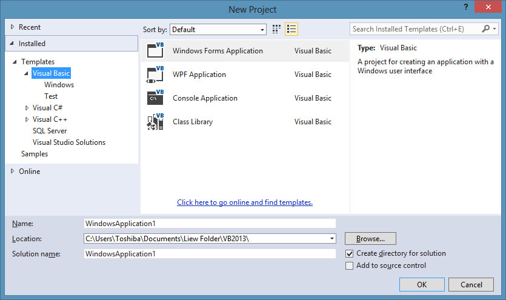
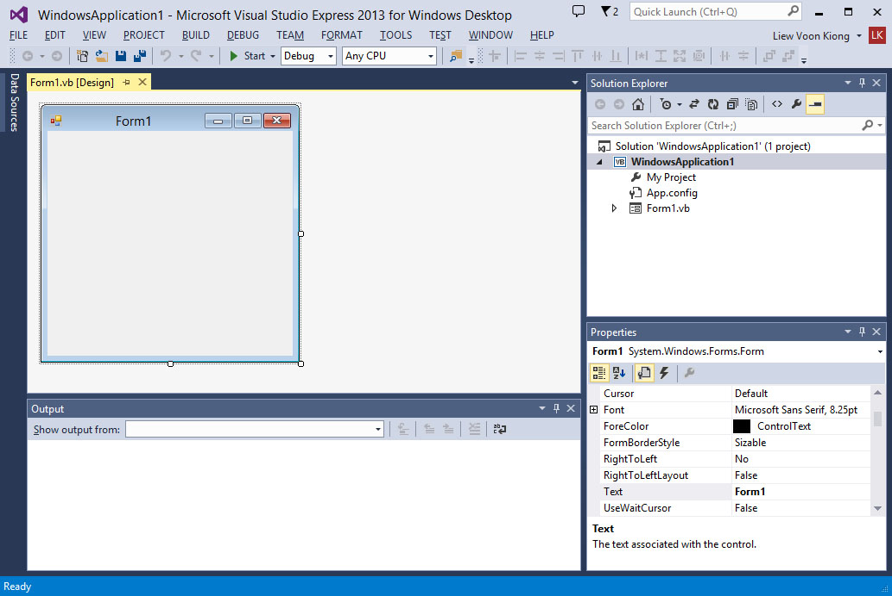
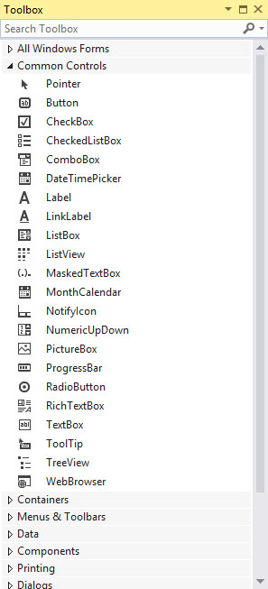
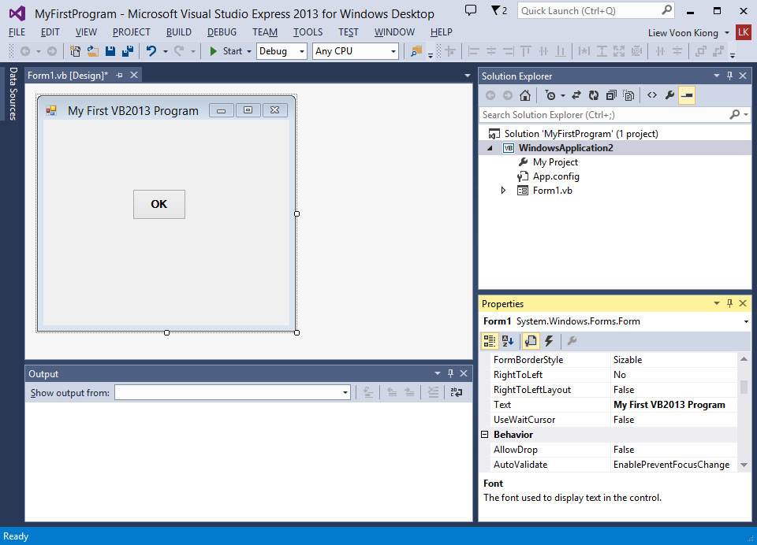
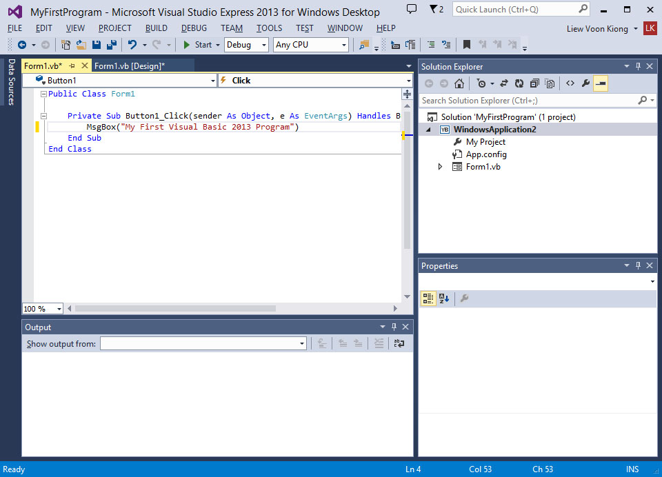

Visual Studio 2013 Lesson 1: Introduction
[Contents]>>[Lesson 2]
1.2 Visual Studio 2013 Integrated Development Environment
The Integrated Development Environment when you
launch Visual Studio 2013 Express is shown in the diagram below.

Figure 1.1: Visual Studio 2013 Start Page
{kind=link}
1.3 Creating a New Project in Visual Studio 2013
The initial window is the Start Page tab. To start a new Visual Studio Express 2013 project, click on New Project under the Start section to launch the Visual Studio 2013 New Project page as shown in Figure 1.2 below. You can also choose to open a recent project:

Figure 1.2: Visual Studio 2013 Project Page
{kind=link}
At the bottom of this dialog box, you can change the default project name WindowsApplication1 to some other name you like, for example, MyFirstProgram. After you have renamed the project, click OK to continue. The following IDE Windows will appear, it is similar to Visual Basic 2012. The Toolbox is not shown until you click on the Toolbox tab.When you click on the Toolbox tab or use the shortcut keys Ctrl+w+x, the common controls Toolbox will appear.

Figure 1.3: Visual Studio 2013
IDE
{kind=link}
Visual Basic Express 2013 IDE comprises a few
windows, the Form window , the Solution Explorer window and the Properties
window . It also consists of a toolbox which contains many useful controls
that allows a programmer to develop his or her Visual Studio 2013
programs.
The toolbox is shown in Figure 1.4.

{kind=link}
Figure 1.4: Visual Studio 2013 Toolbox
Now, we shall proceed to show you how to create your first program. First, change the text of the form to My First Program in the properties window, it will appear as the title of the program. Next, insert a button and change its text to OK. The design interface is shown in Figure 1.5

Figure 1.5: The Design Interface
{kind=link}
Now click on the OK button to bring up the code window and enter the following statement between Private Sub and End Sub procedure, as shown in Figure 1.6:
MsgBox(“My First Visual Studio 2013 Program”)

Figure 1.6: Vb2013 Code window
{kind=link}
Now click on the Start on the toolbar or press F5 to run the program then click on the OK button, a dialog box that displays the “My First Visual Studio 2013 Program″ message will appear,as shown in Figure 1.7:
{kind=link}
Figure 1.7:The Message Box
The function MsgBox is a built-in function of Visual Basic 2013 and it will display the text enclosed within the brackets.
Now you have created your first program, we shall learn more VB2013 programming techniques in coming lessons.